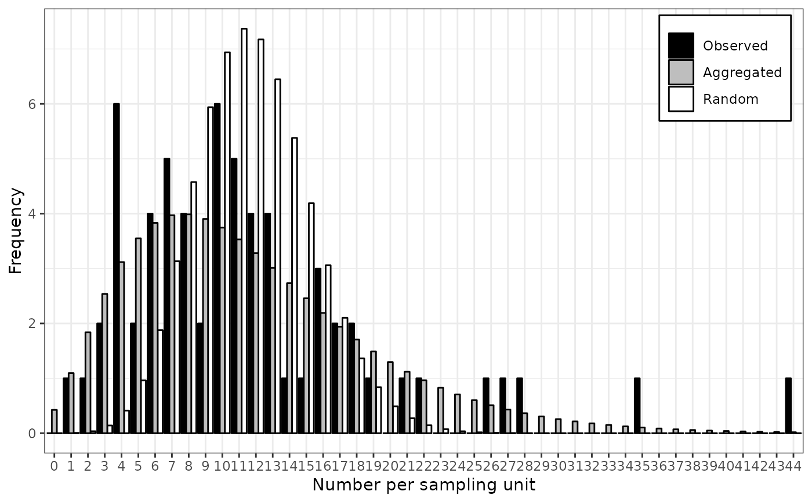
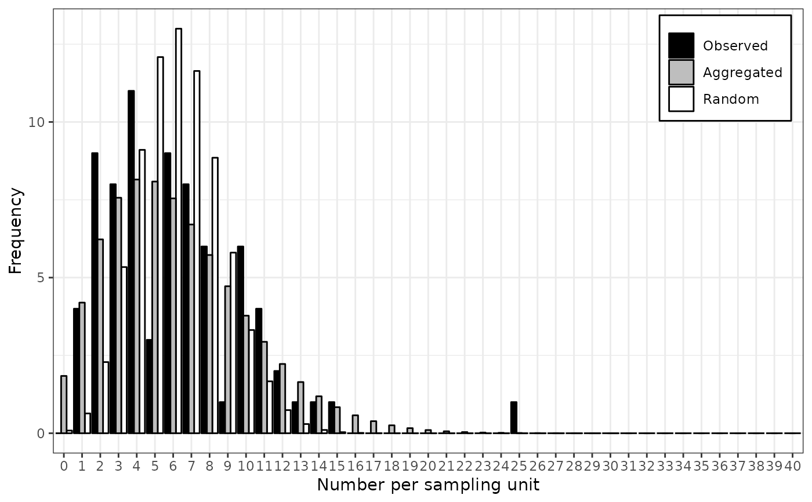
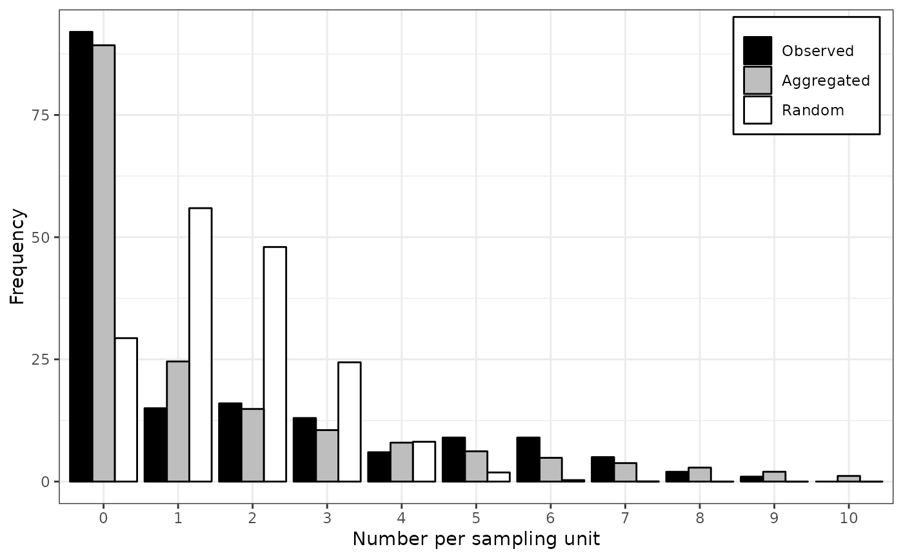
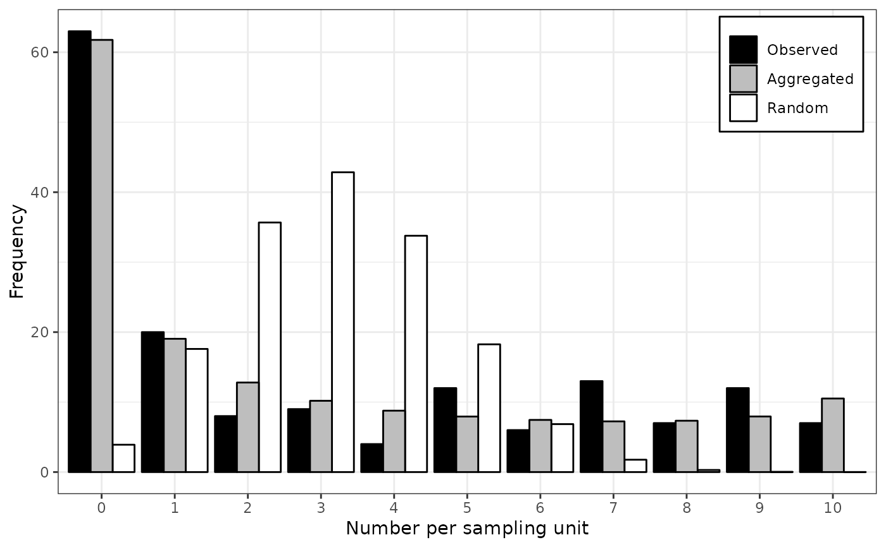

Maximum likelihood fitting of two distributions and goodness-of-fit comparison.
Source:R/distr-fitting.R
fit_two_distr.RdDifferent distributions may be used depending on the kind of provided data. By default, the Poisson and negative binomial distributions are fitted to count data, whereas the binomial and beta-binomial distributions are used with incidence data. Either Randomness assumption (Poisson or binomial distributions) or aggregation assumption (negative binomial or beta-binomial) are made, and then, a goodness-of-fit comparison of both distributions is made using a log-likelihood ratio test.
Usage
fit_two_distr(data, ...)
# S3 method for default
fit_two_distr(data, random, aggregated, ...)
# S3 method for count
fit_two_distr(
data,
random = smle_pois,
aggregated = smle_nbinom,
n_est = c(random = 1, aggregated = 2),
...
)
# S3 method for incidence
fit_two_distr(
data,
random = smle_binom,
aggregated = smle_betabinom,
n_est = c(random = 1, aggregated = 2),
...
)Arguments
- data
An
intensityobject.- ...
Additional arguments to be passed to other methods.
- random
Distribution to describe random patterns.
- aggregated
Distribution to describe aggregated patterns.
- n_est
Number of estimated parameters for both distributions.
Value
An object of class fit_two_distr, which is a list containing at least
the following components:
call | The function call. |
name | The names of both distributions. |
model | The outputs of fitting process for both distributions. |
llr | The result of the log-likelihood ratio test. |
Other components can be present such as:
param | A numeric matrix of estimated parameters (that can be
printed using printCoefmat). |
freq | A data frame or a matrix with the observed and expected frequencies for both distributions for the different categories. |
gof | Goodness-of-fit tests for both distributions (which are typically chi-squared goodness-of-fit tests). |
Details
Under the hood, distr_fit relies on the smle utility
which is a wrapped around the optim procedure.
Note that there may appear warnings about chi-squared goodness-of-fit tests if any expected count is less than 5 (Cochran's rule of thumb).
References
Madden LV, Hughes G. 1995. Plant disease incidence: Distributions, heterogeneity, and temporal analysis. Annual Review of Phytopathology 33(1): 529–564. doi:10.1146/annurev.py.33.090195.002525
Examples
# Simple workflow for incidence data:
my_data <- count(arthropods)
my_data <- split(my_data, by = "t")[[3]]
my_res <- fit_two_distr(my_data)
#> Warning: Chi-squared approximation may be incorrect.
#> Warning: Chi-squared approximation may be incorrect.
summary(my_res)
#> Fitting of two distributions by maximum likelihood
#> for 'count' data.
#> Parameter estimates:
#>
#> (1) Poisson (random):
#> Estimate Std.Err Z value Pr(>z)
#> lambda 11.68254 0.43062 27.129 < 2.2e-16 ***
#> ---
#> Signif. codes: 0 ‘***’ 0.001 ‘**’ 0.01 ‘*’ 0.05 ‘.’ 0.1 ‘ ’ 1
#>
#> (2) Negative binomial (aggregated):
#> Estimate Std.Err Z value Pr(>z)
#> k 3.308038 0.742318 4.4564 8.336e-06 ***
#> mu 11.682540 0.916690 12.7443 < 2.2e-16 ***
#> prob 0.220675 0.040883 5.3977 6.748e-08 ***
#> ---
#> Signif. codes: 0 ‘***’ 0.001 ‘**’ 0.01 ‘*’ 0.05 ‘.’ 0.1 ‘ ’ 1
plot(my_res)

# Simple workflow for incidence data:
my_data <- incidence(tobacco_viruses)
my_res <- fit_two_distr(my_data)
#> Warning: Chi-squared approximation may be incorrect.
#> Warning: Chi-squared approximation may be incorrect.
summary(my_res)
#> Fitting of two distributions by maximum likelihood
#> for 'incidence' data.
#> Parameter estimates:
#>
#> (1) Binomial (random):
#> Estimate Std.Err Z value Pr(>z)
#> prob 0.1556667 0.0066188 23.519 < 2.2e-16 ***
#> ---
#> Signif. codes: 0 ‘***’ 0.001 ‘**’ 0.01 ‘*’ 0.05 ‘.’ 0.1 ‘ ’ 1
#>
#> (2) Beta-binomial (aggregated):
#> Estimate Std.Err Z value Pr(>z)
#> alpha 3.211182 0.785169 4.0898 4.317e-05 ***
#> beta 17.333526 4.419297 3.9222 8.773e-05 ***
#> prob 0.156302 0.011120 14.0560 < 2.2e-16 ***
#> rho 0.046415 0.011131 4.1698 3.049e-05 ***
#> theta 0.048674 0.012241 3.9762 7.002e-05 ***
#> ---
#> Signif. codes: 0 ‘***’ 0.001 ‘**’ 0.01 ‘*’ 0.05 ‘.’ 0.1 ‘ ’ 1
plot(my_res)

# Note that there are other methods to fit some common distributions.
# For example for the Poisson distribution, one can use glm:
my_arthropods <- arthropods[arthropods$t == 3, ]
my_model <- glm(my_arthropods$i ~ 1, family = poisson)
lambda <- exp(coef(my_model)[[1]]) # unique(my_model$fitted.values) works also.
lambda
#> [1] 11.68254
# ... or the fitdistr function in MASS package:
require(MASS)
#> Loading required package: MASS
fitdistr(my_arthropods$i, "poisson")
#> lambda
#> 11.6825397
#> ( 0.4306241)
# For the binomial distribution, glm still works:
my_model <- with(tobacco_viruses, glm(i/n ~ 1, family = binomial, weights = n))
prob <- logit(coef(my_model)[[1]], rev = TRUE)
prob
#> [1] 0.1556667
# ... but the binomial distribution is not yet recognized by MASS::fitdistr.
# Examples featured in Madden et al. (2007).
# p. 242-243
my_data <- incidence(dogwood_anthracnose)
my_data <- split(my_data, by = "t")
my_fit_two_distr <- lapply(my_data, fit_two_distr)
#> Warning: Chi-squared approximation may be incorrect.
#> Warning: Chi-squared approximation may be incorrect.
#> Warning: Chi-squared approximation may be incorrect.
lapply(my_fit_two_distr, function(x) x$param$aggregated[c("prob", "theta"), ])
#> $`1990`
#> Estimate Std.Err Z value Pr(>z)
#> prob 0.1526829 0.01741013 8.769772 1.790281e-18
#> theta 0.5222174 0.09437075 5.533679 3.135830e-08
#>
#> $`1991`
#> Estimate Std.Err Z value Pr(>z)
#> prob 0.2985848 0.0258905 11.532600 9.037225e-31
#> theta 0.9978690 0.1404673 7.103922 1.212655e-12
#>
lapply(my_fit_two_distr, plot)


#> $`1990`
#> NULL
#>
#> $`1991`
#> NULL
#>
my_agg_index <- lapply(my_data, agg_index)
lapply(my_agg_index, function(x) x$index)
#> $`1990`
#> [1] 3.848373
#>
#> $`1991`
#> [1] 5.596382
#>
lapply(my_agg_index, chisq.test)
#> $`1990`
#>
#> Chi-squared test for (N - 1)*index following a chi-squared distribution
#> (df = N - 1)
#>
#> data: X[[i]]
#> X-squared = 642.68, df = 167, p-value < 2.2e-16
#>
#>
#> $`1991`
#>
#> Chi-squared test for (N - 1)*index following a chi-squared distribution
#> (df = N - 1)
#>
#> data: X[[i]]
#> X-squared = 895.42, df = 160, p-value < 2.2e-16
#>
#>